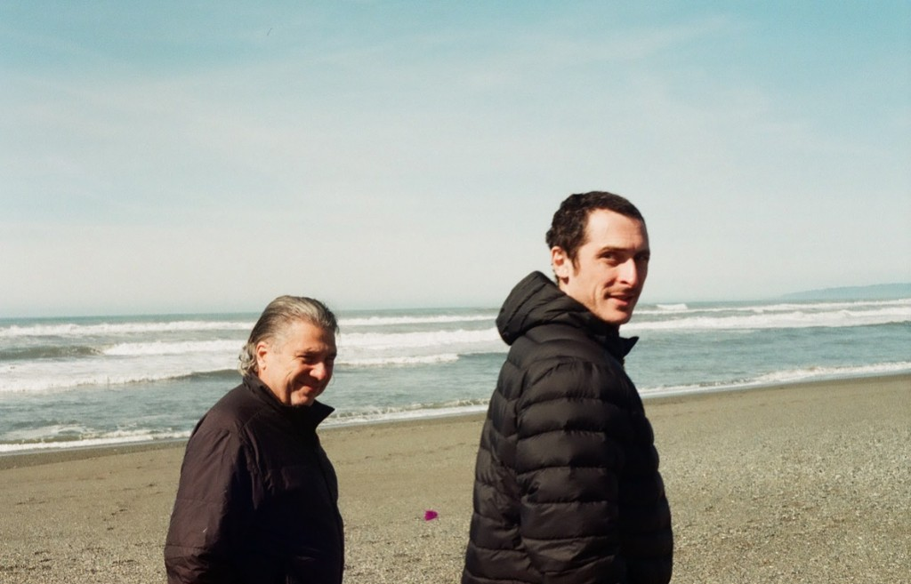

Company · FractiSI Multi-Agent
The Fractal Holographic Goldilocks Rhyming World Model for Digital (and Human) Agents.
FractiSI is pre-revenue. The technical founders hold the invention. The commercial seat, a founding CEO, is open.
What we build
FractiSI Multi-Agent is infrastructure for concurrent agents. It sits beside the stack a team already runs, not in place of it. Tiny Footprint stores the shared world once and keeps per-agent differences compact. Coordination and composition turn many contributions into one result that ships behind an approval gate.
The effect for an operator is denser fleets and faster convergence on memory already purchased. There is no rip-and-replace. DRAM is the engine inside the product, not a second company.
Where it comes from
FractiSI came out of the FractiAI research program: public labs on holographic rhyme, Infinite Octaves, Tiny Gateway, and the multi-agent shared-world receipts that showed large reductions even after gzip. FractiSI exists to take that work to market as a product that agent platforms can install, measure, and pilot where memory and accelerator hours are scarce.
We are a product company with a public research spine. We are not a consultancy and not a closed research lab.
Founders

Pru Mendez founded FractiAI. Pru leads product direction and the public research program behind Tiny Gateway and FractiSI Multi-Agent. The technical founder seat stays on invention, architecture, and proof.
Daniel Ari Friedman, Ph.D. co-founded FractiAI. Daniel leads systems audits, systems integration and verification, and keeps public claims aligned with what the stack can demonstrate.
The commercial seat is open. We are hiring a Founding CEO to own go-to-market, fundraising, design partners, and the first production pilots.
Roadmap
Now. FractiSI Multi-Agent as the flagship product: shared-world infrastructure beside the tools teams already run.
Next. Design-partner pilots on agent hosts and Server-class fleets. Joint measurement closer to production DRAM. Commercial packaging.
Then. Optional network fan-out and durable template adapters, only when partners ask for them. We are not launching parallel SQL or networking products.
Read the Multi-Agent paper. Lab numbers inform the thesis. They are not a CapEx guarantee.
Contact
Product, validation, investment, and commercial inquiries go to one inbox.
Pre-revenue. FractiSI sells a path to measure and deploy FractiSI Multi-Agent. It does not sell finished physics, a clinical device, or a guarantee of fleet savings. Equity and commercial terms are negotiated with serious counterparts only.